Even Coquery
Graduate student in
theoretical physics
even.coquery-villeroy@ens-lyon.fr

OAC - INAF
About Me
Hello! My name is Even*, I am a french physics graduate student in Ecole Normale Supérieure de Lyon. I specialize in theoretical physics, but I have also had the occasion to work with more applied topics, as part of my previous experience as an engineering student in Ecole Centrale de Lyon.
Right now, I am in internship at Osservatorio Astronomico di Cagliari, INAF. I work on theoretical aspects of pulsar-black hole binaries.
*pronounced "eh-ven"